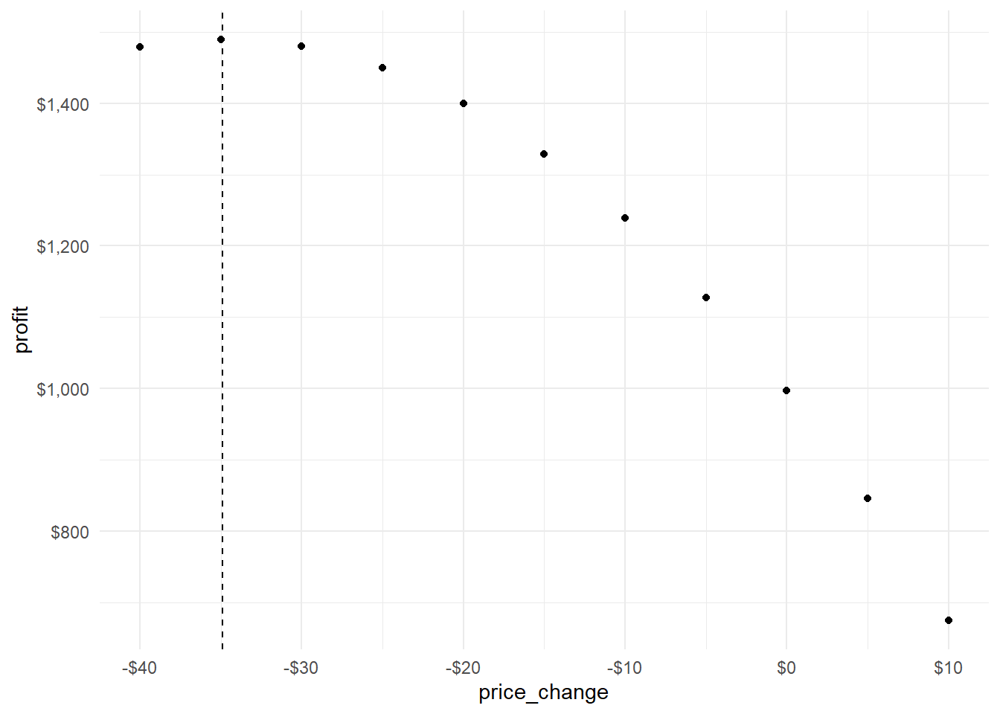

Data used are 2 years of Salesforce orders for Rocky, Georgia, and Durango downloaded and parsed from XML. Data are merged with RBDW-Prod-Model-Sales style data, notably brand and marketing group. Standard cost is supplied by the RBDW-Inventory Cube.
A time series is applied to the sales quantity in order to account for seasonal fluctuations.
Registered S3 method overwritten by 'quantmod':
method from
as.zoo.data.frame zoo
To calculate elasticity, we’ll use a smaller timeframe within the order history rather than the full set. The method used is the \(\beta_{price}\) in an OLS regression divided by the mean quantity / mean price. See this page on price elasticity for more detail.
In addition to the overall elasticity, we want to measure the change in quantity resulting from an elastic relationship. In other words, if we raise the price $1, what is the percent change in quantity we should expect? To do so we’ll calculate that stat and use it as a coefficient for an exponential smoothing forecast.
The above shows forecasting without adjustments to price. Below will demonstrate a single step forecast applying a price change, which will influence forecast order quantities, compared to a model like above that does not use price changes.
y =lapply(seq(-40, 10, 5), \(i) comp_elastic(x, i, 1)) |>rbindlist()y |>ggplot(aes(x = price_change)) +geom_line(aes(y = point_forecast, color ="Static Forecast")) +geom_line(aes(y = point_forecast_elastic, color ="Elastic Forecast")) +theme_minimal() +labs(x ="Change in Price", y ="Forecast", title ="Static vs. Elastic Forecasts")
So now that we have a model that (perhaps somewhat naively) responds to changes in pricing, we want to determine optimal profitability. To determine profitability we want to find the point at which maximum sales inersect with the highest price.
\[
profit = (base\ price+\Delta P - standard\ cost) * elastic\ forecast
\] This will account for the effect of price changes \(\Delta P\) on expected demand.
std <- lehighCube::sql_query("select * from style_std_cost where style = 'G108'")y[,base_price := x[.N, (mean_price_base)]]y[,profit := (base_price + price_change - std$std_cost) * point_forecast_elastic]p1 <- y |>ggplot(aes(x = price_change, y = profit)) +geom_point() +theme_minimal() +scale_x_continuous(labels = scales::dollar_format()) +scale_y_continuous(labels = scales::dollar_format())p1
From our data we can fit a polynomial regression. Since we have a parabola, we want the coefficients of \(a^2+bx+c\) so we can find the x value of the vertex, which will give us the price change with the highest profitability. Since the actual profit is not useful, we need only solve for x.
\[vertex = (\frac{-b}{2a} , \frac{-D}{4a})\]
model =lm(profit ~poly(price_change, 2, raw =TRUE, simple = T), y[forecast_periods ==1]) co =coefficients(model)intercept =-co[2] / (2*co[3])p1 +geom_vline(aes(xintercept = intercept), linetype =2)

Our intercept gives us the optimal change in price to maximize profitability. -$34.89. We can add this intercept to the current price to get the optimal pricing strategy. $104.11